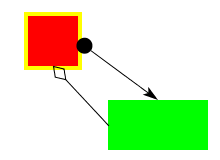

ConnectorTutorial

This example illustrates how to use connectors. Connectors are figures that connect locations on two different figures. These locations are identified by objects called Sites, which represent points such as the north-west corner of a rectangle, or a vertex of a poly-line. In general, sites can be anywhere on a figure, and specific figure classes have methods to access their sites.
The code to create a connector looks like this:
Site a = figureA.getE();
Site b = figureB.getN();
connectorA = new StraightConnector(a, b);
layer.add(connectorA);
(Where the methods getE() and getN() are methods on some figure
that return Sites -- in this case, on the east and north edges
of the respective figures.)
In general, there can be arbitrarily many different kinds of connectors. The Diva canvas currently provides two: one that simply draws a straight line between the two sites, and one that draws a "manhattan" routing between the two sites. Each of these also accepts an object on each end that will draw a decoration such as an arrow-head or a circle at the attachment point. For example, we can add an arrowhead to the connector with:
Arrowhead arrow = new Arrowhead(b.getX(), b.getY(), b.getNormal());
connectorA.setHeadEnd(arrow);
Once a Connector is connected between two sites, it is easy to make it appear as though the Connector is "glued" to the figures containing the sites. Any code that moves or changes one of the two figure needs to call one of the methods route(), reroute(), headMoved(), or tailMoved() on the connector, and the connector will redraw itself between the sites. In this example, we have set up a DragInteractor to move the two rectangles shown in the image above. To also reroute the connectors when either changes, we add a layer listener to the interactor. After the interactor has handled a mouse event, it passes the event on to this listener.
DragInteractor i = controller.getDragInteractor();
i.addLayerListener(new LayerAdapter () {
public void mouseDragged (LayerEvent e) {
connectorA.reroute();
connectorB.reroute();
}
});
When a connector is selected, it gets a grab-handle on either end, which can be grabbed to allow the connector to be disconnected from the figure and reconnected to another. Although the code is a little convoluted, the essence of it is this:
SelectionInteractor ci = new SelectionInteractor(si.getSelectionModel());
connectorA.setInteractor(ci);
connectorB.setInteractor(ci);
ConnectorManipulator manipulator = new ConnectorManipulator();
manipulator.setSnapHalo(4.0);
manipulator.setConnectorTarget(new SRTarget());
ci.setPrototypeDecorator(manipulator);
This code first creates an instance of SelectionInteractor,
which it sets as the interactor for the connectors. It then creates an
instance of ConnectorManipulator, and tell the interactor that when a
connector is selected, it should create a copy of the manipulator and
wrap it around the connector. The manipulator highlights the connector
with grab handles when the connector is selected.
Notice that in this code there are actually two selection interactors, one for the rectangles and one for the connectors. They are linked by having the same selection model. One effect that this has is that selecting a rectangle when a connector is already selected will deselect the connector. If there were two selection models then connectors and rectangles could be selected entirely independently from eachother.
The SRTarget in the above code is an inner class that implements the ConnectorTarget interface. This class is used by the ConnectorManipulator when trying to find a good place to connect to. In this example, the target is returning sites on the four edges of the rectangles, which is why the connectors snap to those points.
For more details, see the tutorial source code.